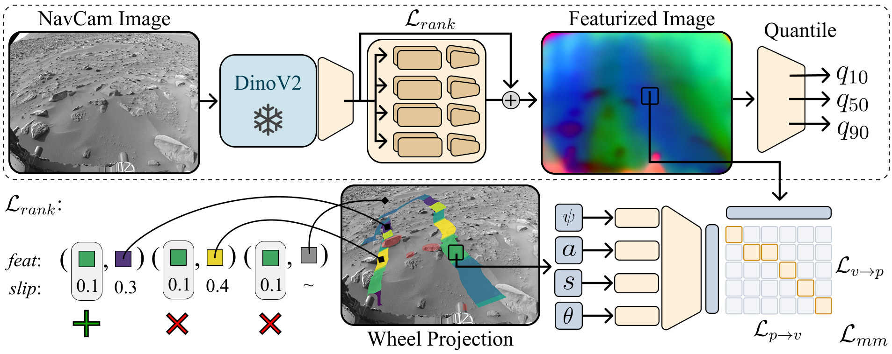
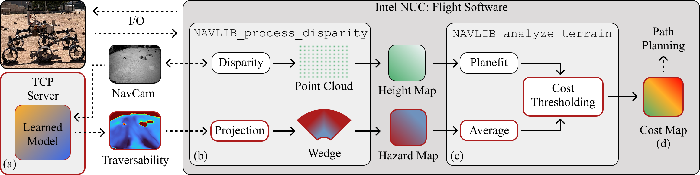

Architecture of the traversability model. The dotted region denotes the deployment path. The transformer component is trained through two core loss functions: a contrastive feature ranking noted $\mathcal{L}_{rank}$ and a contrastive multimodal alignment, $\mathcal{L}_{mm}$. $\mathcal{L}_{rank}$ is meant to rank images features based on how well the rover drove over it (measured by slip) and contrasts it from features that were not driven on ($\sim$), such as large boulders. The $\mathcal{L}_{mm}$ then contributes other proprioceptive signals such vehicle tilt, rocker-bogie angles, and acceleration. The final MLP is trained using a pinball loss to generate quantiles of slip prediction. Our final traversability score is generated by taking the $traversability = \max(q_{90} - q_{10},\, q_{50})$, where $q_{50}$ represents the median slip prediction and $q_{90} - q_{10}$ is the prediction uncertainty (predicted slip distribution width).

We integrate the learned traversability score into ENav, the onboard navigation planner, where it augments the geometric cost map used for path selection. This lets the rover account for terrain that is geometrically benign but visually or proprioceptively risky (e.g., loose or slippery surfaces) without changes to the underlying planning pipeline.

We compare our model's predicted traversability against the rover's actual wheel tracks on Sol 543. The traversability score, $\max(q_{90} - q_{10},\, q_{50})$, combines the median predicted slip with the prediction uncertainty, highlighting regions the model expects to be difficult or unfamiliar to drive over.
Our traversability model running during a drive, shown at 8× speed with a Navcam inset for context. The predicted traversability map updates as the rover perceives new terrain, guiding path selection in concert with the onboard navigation planner.
This research was carried out at the Jet Propulsion Laboratory (JPL), California Institute of Technology, under a contract with the National Aeronautics and Space Administration (80NM0018D0004). This work was supported by JPL’s Strategic Research and Technology Development (SRTD) program. The High Performance Computing resources used in this investigation were provided by funding from the JPL Enterprise IT Division. The authors would like to thank Tyler Del Sesto and Richard Rieber for their insightful discussions on the hardware platform and ENav algorithm, along with JPL's Rover Operations Center (ROC) for their support.